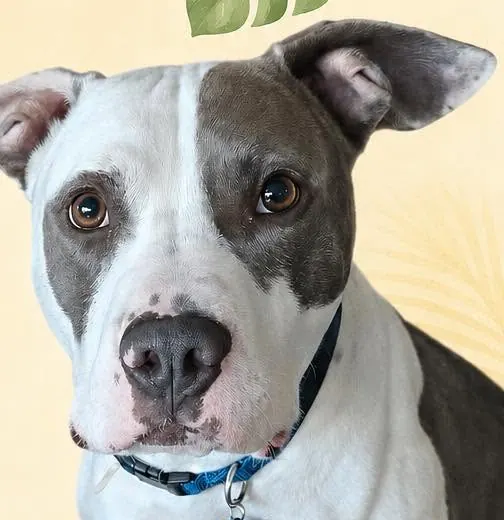
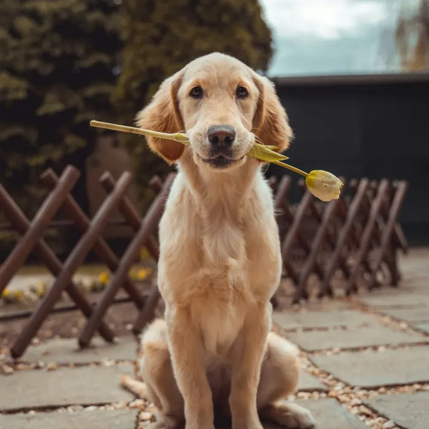
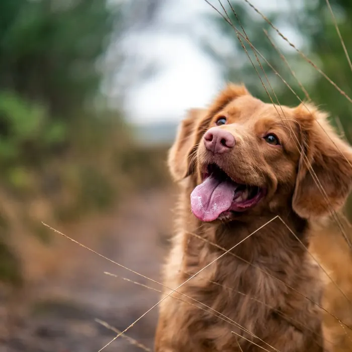
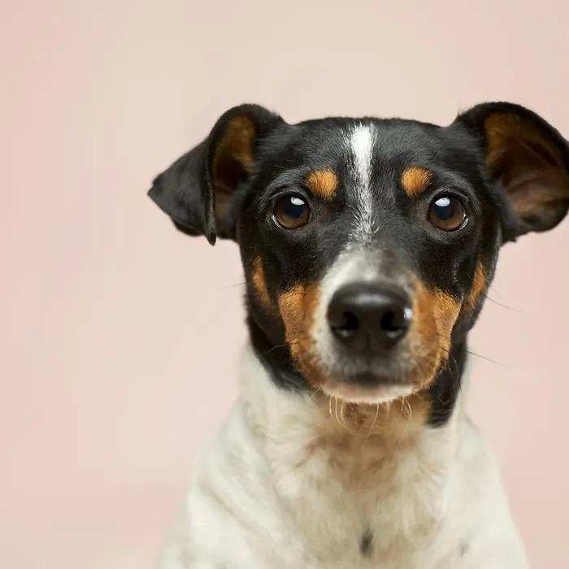
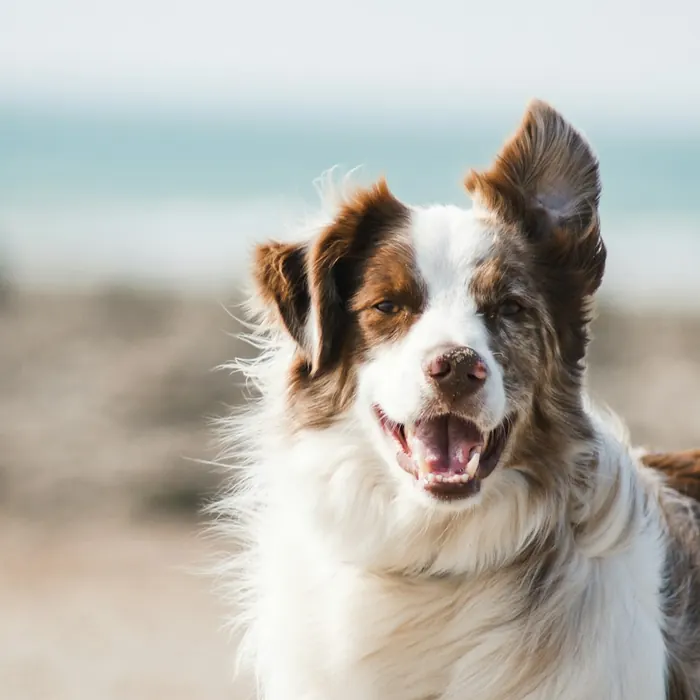
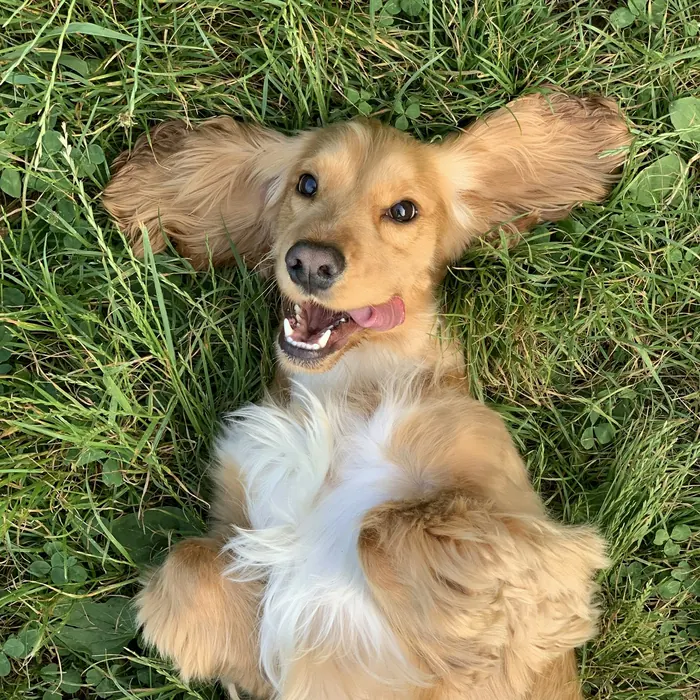
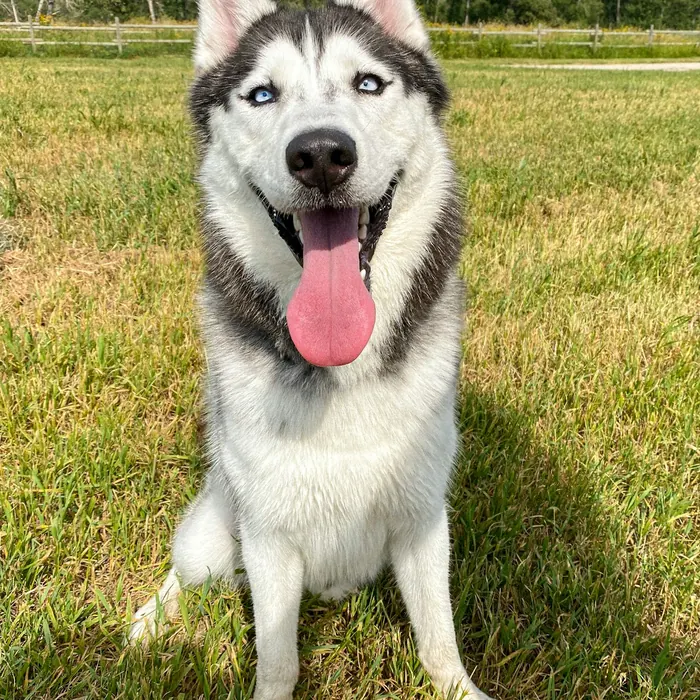

Needs a fosterHome / Adopt
Adoptable dogs
Find the dog who fits your life.
Every dog is 100% vetted and living in a foster home. Our fosters know each dog's quirks, so we can tell you honestly who they are.

Show:
7 dogs
Preview note: Theo is a real Big Love Rescue dog. Cards marked "Sample" are design placeholders. In Phase 4 this grid connects to BLR's Petfinder listings, so it updates itself when fosters post a dog.
NewSample

Sample
Needs a fosterSample
Sample
Sample
Sample
Spotlight
Theo is looking for his people.
He's a well-trained dog with a big personality and a bigger heart.
Theo walks well on a leash and greets guests with enthusiasm and self-control. He has lived with other dogs and done well. He needs a calm, structured home with steady, grown-up energy. In a home like that he's relaxed and easy to live with.
- Needs a home with a securely fenced yard (no apartments or townhouses)
- Does best with calm, confident, consistent adopters
- Can live with well-mannered dogs in a structured home
What's included
$350 adoption fee
Every rescue is fully vetted and altered before adoption. Your fee includes:
- Spay or neuter surgery
- Microchip
- Rabies vaccine and dewormer
- Two sets of puppy shots, or adult boosters
- Any additional vet treatment before adoption
- Heartworm treatment for positive adults, at no extra cost
Apply
Submit an adoption application online.
Vet check
We confirm your pets' care with your vet.
Home visit
A friendly check that it's the right fit.
Adopt
Meet and greet, sign the contract, go home.
Questions
Adoption FAQ
Is adoption first-come, first-served?
No. We match each dog with the home that fits them best. That isn't always the first application we get.
Can I meet a dog before applying?
You need an approved application before we can set up a meet and greet. Our dogs live in foster homes, so this protects both the dogs and our volunteer families.
What does the home check involve?
A short visit to see where the dog will live: fencing, space and any other pets.
Do you adopt outside the Houston area?
Sometimes. If you live outside Greater Houston, email us before you apply.
Do you have cats too?
Occasionally, yes. Use our cat/kitten adoption application.
Next step
Ready to apply?
Apply to adopt or foster, or make a donation.